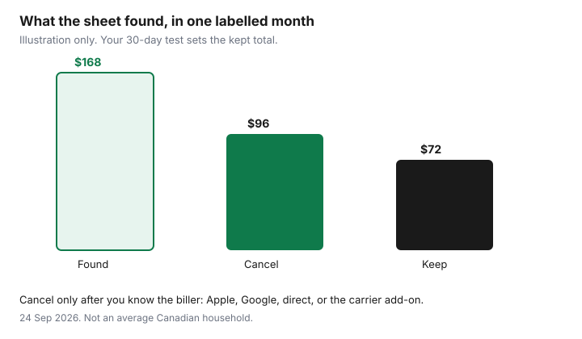

Subscriptions · Canada
Subscription Audit for Canadians: Cut Streaming, Apps, and Free Trials That Aren't Free
A Canadian household can pass $100 a month on streaming and apps without anyone noticing, because the charges do not arrive on one bill. Netflix might be on a credit card, Crave on a Bell or Rogers add-on, a kids’ app on Apple, and a cloud plan on a statement line that says PAYPAL. The audit is a method: export every recurring charge, score it, cancel in the place that actually bills you, and put the next renewal on a calendar seven days early.
This page is the household pass. Rotating Netflix, Disney+, and Crave is its own guide. Free-trial proof is its own checklist. Warehouse membership math stays on the Costco membership guide. Whether Ignite TV is cheaper than a streaming stack stays on the Ignite TV comparison. Cancelling an auto policy mid-term is a short-rate calculation on the insurance guide, not a subscription button.
Disclosure: Budget spreadsheets and cash-back portals are offer types. Saving Optimizer may earn a commission if we later add partner links. We do not currently claim a tracker, portal, or streaming partnership. Education only. No card rankings.
Key takeaways
- Export six places before you cancel anything: bank, credit card, Apple, Google Play, Amazon, and the telecom add-on list. A charge that is not on the card is still a charge.
- Score each service as used in the last 30 days, replaceable by your library’s Kanopy or Hoopla, or seasonal. Habit is not use.
- One in, one out. A new streamer starts only after the previous cancel confirmation is saved.
- Cancel where the receipt says you were billed. Deleting an app does not cancel Apple, Google Play, or a Rogers or Bell add-on.
- A 12-month rotation beats paying for Netflix, Disney+, and Crave in the same month all year. Reminders go on the calendar seven days before annual renewals and trial end dates.
Export every recurring charge: bank, credit card, Apple, Google Play, Amazon, and telecom add-ons
Open a blank sheet with one row per charge. Columns that earn their keep: service name, who in the house uses it, biller, amount in Canadian dollars, whether tax is included, last charge date, next renewal, and a blank for the decision. Do not start by cancelling the first logo you dislike. You will miss the $7.99 that has no logo.
Pull at least 90 days from every chequing account and every credit card the household uses, including a partner’s card and a teen’s supplemental card. Filter for repeats: the same merchant, about the same amount, about every month. Annual charges hide in a 90-day window, so if the bank lets you export 12 months, do that too and star anything that posted once. Known descriptors to type into search: APPLE.COM/BILL, GOOGLE, AMZN, PAYPAL, NETFLIX, DISNEY, CRAVE, ADOBE, and the gym’s name. A processor name you do not recognise still gets a row. The statement hunt is the longer version of this export.
Then leave the bank and open the wallets that bill through it. On an iPhone: Settings, your name, Subscriptions. On Google Play: the subscriptions list at play.google.com, signed into the Google Account that owns the phone. On Amazon.ca: Memberships and Subscriptions, which is where Prime, channels, and Subscribe & Save sit. Prime’s annual-versus-monthly math is the Prime break-even, not a guess during this export. On the Rogers, Bell, Telus, Videotron, or other carrier app: add-ons and subscriptions, separate from the plan price. A Crave or Disney+ credit on a mobility bill will not appear as “Crave” on the Visa.
Grocery delivery passes and meal-kit renewals belong on the sheet as charges. Whether a meal-kit trial beats cooking is the meal-kit decision. PC Express pass math is the pickup-and-delivery guide. Here you only record the amount, the renewal, and whether anyone still places an order.
Score each service: used in last 30 days, replaceable by library/Kanopy/Hoopla, or seasonal only
Three scores, written in the sheet, not debated in the group chat. Used means someone opened it in the last 30 days for something they meant to watch or do. Continue-watching and last-login beat “we might.” Library means a public-library card already covers that job through Kanopy, Hoopla, or the library’s own streaming. Ticket counts are set by your library, not by a national rule. Check the library’s Kanopy or Hoopla page before you assume the cap. Seasonal means you want it for a defined run: a sports stretch, a show’s new season, kids’ March break, tax-season software. Seasonal services get an end date. They do not get a permanent row.
| Score | Test | What you do |
|---|---|---|
| Keep | Opened in the last 30 days, and nothing you already pay for replaces it | Leave it. Write the renewal date. |
| Rotate or library | Wanted some months, or a documentary and kids gap Kanopy or Hoopla can cover | Cancel at period end. Rejoin on purpose. See the rotation guide. |
| Cancel | No use in 30 days, not seasonal, not the household’s one always-on service | Cancel in the billing place. Save the confirmation. |

If two adults disagree, the person who pays does not automatically win, and the person who “might use it on a plane” does not either. The 30-day test does. A service nobody opened is a cancel even if it was a gift. A service one person uses every week is a keep even if the other person never opens it.
Apply one-in-one-out: add a streamer only after cancelling another
One in, one out is a rule for video services you pay for. Before anyone starts a new streamer, the sheet shows a cancel confirmation for another one, with an end date. “We’ll cancel Netflix after we finish the show” is how three logos stay on the card. Finish the show inside the period you already paid, then cancel. The next join waits until that confirmation email is in the folder.
The rule has two honest exceptions. A free trial that you have already calendared to die before it bills can overlap the service you are about to cancel, for that trial window only. A bundle line you cannot split, such as Crave included with a TV package you are keeping on purpose, counts as the one service. It does not give you permission to add Netflix and Disney+ “because Crave was free.” If the TV package is the question, price it on the cord-cutting guide. This page only counts the streaming charges.
Apps follow the same rule when they are entertainment or duplicates: two meditation apps, two cloud photo plans, two password managers. Utilities you actually use, such as the one cloud backup that holds the family photos, are keeps. They are not traded against Netflix.
Map who bills where—direct vs App Store vs Rogers/Bell bundle—so you cancel the right place
Cancelling in the wrong place is the usual failure. The app still opens, the charge still posts, and the household thinks it is done. Match the receipt, not the icon.
- Apple. The email says Apple, or the statement says APPLE.COM/BILL. Cancel in Settings, your name, Subscriptions. Apple’s Canadian support page, published 14 Sep 2026, says a trial must be cancelled at least 24 hours before it ends. Deleting the app leaves the subscription.
- Google Play. The receipt is from Google. Cancel at play.google.com under the Google Account that paid. Google’s help page states that uninstalling the app does not cancel the subscription.
- Direct. Netflix, amazon.ca, Adobe, and most gyms bill you themselves. Cancel on that site, signed into the email that receives the invoice. Netflix’s help centre says signing out or deleting the app does not end the membership, and that a membership billed by a payment partner has to be cancelled with that partner.
- Carrier add-on. If Crave, Disney+, or Netflix is a line on a Rogers, Bell, or other telecom bill, cancelling inside the streamer may not remove the add-on, and leaving the bundle can turn direct billing back on. Read that pause before you drop TV. Steps for the trial itself are the trial checklist.
Write the biller in the sheet in those four words: Apple, Google, direct, or carrier. The cancel step is then obvious. If a family member’s Apple Account owns the subscription, only that account can cancel it. Apple says so on the same support page.
Build a 12-month rotation calendar instead of stacking Netflix + Disney+ + Crave year-round
Stacking is the default because each service is “only” a few dollars and the shows do not arrive in the same month. Put the year on one page. Pick one always-on service. Give every other video service a month range and a cancel date at the end of that range. Library digital fills the gaps. The month-by-month version, including ad-tier prices checked for this draft, is the rotation guide.
A calendar that says “Disney+ in November and December, Crave for the season you named, Netflix all year, nothing else” is a plan. A calendar that says “all three, we’ll see” is the stack you already have. Review the calendar when you do the quarterly statement pass, not when a trailer autoplays.
Set renewal reminders 7 days before annual charges and free-trial end dates
Seven days is the household rule because annual charges and trials both fail on the morning they renew. Create a calendar event titled with the service, the amount, and the biller: “Disney+ annual, check CAD price, Apple, cancel if unused.” Set it seven days before the renewal or the trial end. For an Apple trial, that reminder must still leave you 24 hours, which seven days does. Do not move the reminder to the renewal morning.
Put the events on a calendar both adults can see. A reminder that lives in one person’s head is how the charge posts. When the alert fires, open the sheet, check the 30-day score, and either confirm the renewal on purpose or cancel that day. Save the confirmation in the same folder as the sheet. Then book the next quarterly audit: new trials show up constantly, which is why the pass repeats. The quarterly hunt is that repeat.
Sources & date stamps
- Apple Support (CA), “Cancel a subscription from Apple,” published 14 Sep 2026: Settings, your name, Subscriptions; cancel a trial at least 24 hours before it ends; a family member’s subscription can only be cancelled from that Apple Account.
- Google Play Help, “Cancel, pause, or change a subscription on Google Play,” used 24 Sep 2026: uninstalling an app does not cancel the subscription.
- Netflix Help, “How to cancel Netflix,” used 24 Sep 2026: cancel on the membership page; signing out or deleting the app does not end it; a partner-billed plan is cancelled with the partner.
- Streaming tier dollars used in the companion rotation guide are date-stamped there. This audit does not invent a household average.
Frequently asked questions
How often should a Canadian household audit subscriptions?
Once a quarter works, plus a reminder seven days before any annual renewal or free-trial end. Ninety days of transactions catch new monthly charges. The master list catches the annual charge that last posted outside that window.
Does deleting an app cancel the subscription?
No. Apple and Google both bill after the app is gone. Cancel in Settings then Subscriptions, or in Google Play’s subscriptions list, or on the vendor’s site if the receipt is direct.
What if Crave is on my Bell or Rogers bill?
Treat it as a carrier add-on. Cancelling only inside the Crave app may leave the line on the telecom bill. Leaving the bundle can also restart a direct charge if the streamer account is still linked. Read both places before you assume it is off.
Should I cancel insurance the same way?
No. A mid-term auto policy cancellation can be a short-rate refund, and public insurers tie basic cover to the plate. Use the insurance guide for that math. This page is streaming, apps, and memberships.
What is a fair monthly ceiling?
The ceiling is whatever is left after the 30-day test, not a number from a survey. Write the kept total in the sheet. If it is more than you meant to spend, the rotation calendar is the next cut.